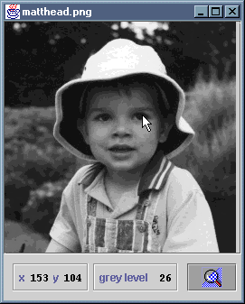
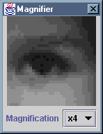

 
The ImageViewer application displays an image. If the
image is large, a smaller viewport is displayed, along with scrollbars that
move the viewport elsewhere in the image. As the cursor moves over the
image, the coordinates of the underlying image pixel and its scalar or
vector value are updated on an information panel beneath the image. A
magnifier button reveals or dismisses a magnifier view of the region
surrounding the cursor.
The application consists of source files ImageViewer.java,
Magnifier.java and PixelInfoPane.java, plus an
icon file, magnify.gif. Compilation of the source code
generates the .class files
ImageViewer.class ImageViewer$1.class ImageViewer$2.class ImageViewer$3.class ImageViewer$Scroller.class Magnifier.class Magnifier$1.class PixelInfoPane.class
These and the icon have been packaged as a single JAR file,
ImageViewer.jar. You can install the application by copying
this JAR file, along with either the MS-DOS batch file
LogPolar.bat or the bash shell script
LogPolar.sh, as appropriate. The batch file or script should
be edited to reflect the new location of the JAR file.